기계설계산업기사 (2015-03-08 기출문제)
1과목: 기계가공법 및 안전관리
1. 드릴링 머신에서 회전수 160rpm, 절삭속도 15m/min 일 때, 드릴 지름(mm)은 약 얼마인가?
- 29.8
- 35.1
- 39.5
- 15.4
(정답률: 71%)

2. 재해 원인별 분류에서 인적원인(불안전한 행동)에 의한 것으로 옳은 것은?
- 불충분한 지지 또는 방호
- 작업장소의 밀집
- 가동 중인 장치를 정비
- 결함이 있는 공구 및 장치
(정답률: 81%)
3. 중량물의 내면 연삭에 주로 사용되는 연삭방법은?
- 트래버스 연삭
- 플렌지 연삭
- 만능 연삭
- 플래내터리 연삭
(정답률: 59%)
4. 블록 게이지의 부속 부품이 아닌 것은?
- 홀더
- 스크레이퍼
- 스트라이버 포인트
- 베이스 블록
(정답률: 74%)
5. 목재, 피혁, 직물 등 탄성이 있는 재료로 바퀴 표면에 부착시킨 미세한 연삭입자로써 버핑하기 전 가공물 표면을 다듬질하는 가공방법은?
- 폴리싱
- 롤러 가공
- 버니싱
- 숏 피닝
(정답률: 63%)
6. 특정한 제품을 대량 생산할 때 적합하지만, 사용범위가 한정되며 구조가 간단한 공작기계는?
- 범용 공작기계
- 전용 공작기계
- 단능 공작기계
- 만능 공작기계
(정답률: 78%)
7. 중량 가공물을 가공하기 위한 대형 밀링머신으로 플레이너와 유사한 구조로 되어있는 것은?
- 수직 밀링머신
- 수평 밀링머신
- 플라노 밀러
- 회전 밀러
(정답률: 65%)
8. 분할대에서 분할 크랭크 행들을 1회전하면 스핀들은 몇 도(°) 회전 하는가?
- 36°
- 27°
- 18°
- 9
(정답률: 65%)
9. 가공물을 절삭할 때 발생되는 칩의 형태에 미치는 영향이 가장 적은 것은?
- 공작물 재질
- 절삭속도
- 윤활유
- 공구의 모양
(정답률: 65%)
10. 지름이 100mm인 가공물에 리드 600mm의 오른나사 헬리컬 흠을 깎고자 한다. 테이블 이송나사의 피치가 10mm인 밀링머신에서, 테이블 선회각을 tanα로 나타낼 때 옳은 값은?
- 31.41
- 1.90
- 0.03
- 0.52
(정답률: 27%)
11. 수준기에서 1눈금의 길이를 2mm로 하고, 1눈금의 각도 5°(초)를 나타내는 기포관의 곡률반경은?
- 7.26m
- 72.6m
- 8.23m
- 82.5m
(정답률: 23%)
12. 연삭숫돌바퀴의 구성 3요소에 속하지 않는 것은?
- 숫돌입자
- 결합제
- 조직
- 기공
(정답률: 60%)
13. 선반가공에서 양 센터작업에 사용되는 부속품이 아닌 것은?
- 돌림판
- 돌리개
- 맨드릴
- 브로치
(정답률: 75%)
14. −18㎛의 오차가 있는 블록 게이지에 다이얼 게이지를 영점 셋팅하여 공작물을 측정하였더니, 측정값이 46.78mm 이었다면 참값(mm)은?
- 46.960
- 46.798
- 46.762
- 46.603
(정답률: 49%)
15. 공작기계에서 절삭을 위한 세 가지 기본운동에 속하지 않는 것은?
- 절삭운동
- 이송운동
- 회전운동
- 위치조정운동
(정답률: 63%)
16. 지름 50mm인 연삭숫돌을 7000rpm으로 회전 시키는 연삭작업에서, 지름 100mm인 가공물을 연삭숫돌과 반대방향으로 100rpm으로 원통 연삭할 때 접촉점에서 연삭의 상대속도는 약 몇 m/min 인가?
- 931
- 1099
- 1131
- 1161
(정답률: 53%)
17. 게이지 종류에 대한 설명 중 틀린 것은?
- pitch 게이지: 나사 피치 측정
- thickness 게이지: 미세한 간격(두께) 특정
- radius 게이지: 기울기 측정
- center 게이지: 선반의 나사 바이트 각도 측정
(정답률: 69%)
18. 선반에서 나사가공을 위한 분할너트(half nut)는 어느 부분에 부착되어 사용하는가?
- 주축대
- 심압대
- 왕복대
- 베드
(정답률: 51%)
19. 절삭온도와 절삭조건에 관한 내용으로 틀린 것은?
- 절삭속도를 증대하면 절삭온도는 상승한다.
- 칩의 두께를 크게 하면 절삭온도가 상승한다.
- 절삭온도는 열팽창 때문에 공작물 가공치수에 영향을 준다.
- 열전도율 및 비열 값이 작은 재료가 일반적으로 절삭이 용이하다.
(정답률: 64%)
20. 표준 맨드릴(mandrel)의 테이퍼 값으로 적합한 것은?
- 1/10~1/20정도
- 1/50~1/100정도
- 1/100~1/1000정도
- 1/200~1/400정도
(정답률: 66%)
2과목: 기계제도
21. 다음 그림과 같은 평면도 A, B, C, D와 정면도 1, 2, 3, 4가 올바르게 짝지어진 것은? (단, 제3각법을 적용)
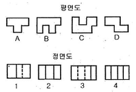
- A-2, B-4, C-3, D-1
- A-1, B-4, C-2, D-3
- A-2, B-3, C-4, D-1
- A-2, B-4, C-1, D-3
(정답률: 82%)
22. KS에서 정의하는 기하공차 기호 중에서 관련형체의 위치 공차 기호들만으로 짝지어진 것은?
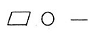
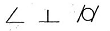
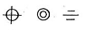
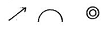
(정답률: 83%)
23. 그림과 같이 우측의 입체도를 3각법으로 정투상한 도면(정명도, 평면도, 우측면도)에 대한 설명으로 옳은 것은?
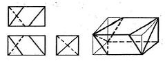
- 정면도만 틀림
- 모두 맞음
- 우측면도만 틀림
- 평면도만 틀림
(정답률: 73%)
24. 그림과 같은 도면에서 치수 20부분의 “굵은 1점 쇄선 표시”가 의미하는 것으로 가장 적합한 설명은?
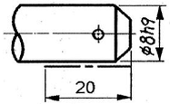
- 공차가 ø8h9 보다 약간 적게 한다.
- 공차가 ø8h9 되게 축 전체 길이부분에 필요하다.
- 공차 ø8h9 부분은 축 길이 20 되는곳 까지만 필요하다.
- 치수 20 부분을 제외하고 나머지 부분은 공차가 ø8h9 되게 가공한다.
(정답률: 81%)
25. 보기와 같은 입체도를 제 3각법으로 투상할 때 가장 적합한 투상도는?
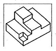
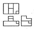
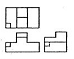
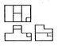
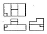
(정답률: 85%)
26. 다음 치수 중 치수 공차가 0.1 이 아닌 것은?
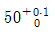
- 50±0.⑤
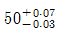
- 50±0.1
(정답률: 82%)
27. 데이텀(datum)에 관한 설명으로 틀린 것은?
- 데이텀을 표시하는 방법은 영어의 소문자를 정사각형으로 둘러싸서 나타낸다.
- 지시선을 연결하여 사용하는 데이텀 삼각기호는 빈틈없이 칠해도 좋고, 칠하지 않아도 좋다.
- 형체에 지정되는 공차가 데이텀과 관련되는 경우 데이텀은 원칙적으로 데이텀을 지시하는 문자기호에 의하여 나타낸다.
- 관련 형체에 기하학적 공차를 지시한 때, 그 공차 영역을 규제하기 위하여 설정한 이론적으로 정확한 기하학적 기준을 데이텀이라 한다.
(정답률: 75%)
28. 도면(위치도)에 치수가 다음과 같이 표시 되어 있는 경우 치수의 외곽에 표시된 직사각형은 무엇을 뜻하는가?
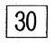
- 다듬질전 소재 가공치수
- 완성 치수
- 이론적으로 정확한 치수
- 참고 치수
(정답률: 79%)
29. 축을 가공하기 위한 센터구멍의 도시 방법 중 그림과 같은 도시 기호의 의미는?
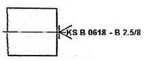
- 센터의 규격에 따라 다르다.
- 다듬질 부분에서 센터구멍이 남아 있어도 좋다.
- 다듬질 부분에서 센터구멍이 남아 있어서는 안된다.
- 다듬질 부분에서 반드시 센터구멍을 남겨둔다.
(정답률: 70%)
30. 그림과 같이 화살표 방향이 정면일 경우 우측면도로 가장 적합한 투상도는?
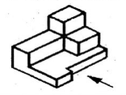
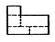
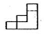
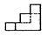
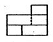
(정답률: 74%)
31. 끼워맞춤 중에서 구멍과 축 사이에 가장 원활한 회전운동이 일러날 수 있는 것은?
- H7/f6
- H7/p6
- H7/n6
- H7/t6
(정답률: 76%)
32. 베어링 호칭번호 NA 4916 V 의 설명 중 틀린 것은?
- NA 49는 니들 로울러 베어링 치수계열 49
- V는 리테이너 기호로서 리테이너가 없음
- 베어링 안지름은 80mm
- A는 시일드 기호
(정답률: 65%)
33. 다음도면과 같은 이음의 종류로 가장 적합한 설명은?
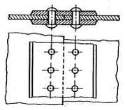
- 2열 겹치기 평행형 둥근머리 리벳이음
- 양쪽 덮개판 1열 맞대기 둥근머리 리벳이음
- 양쪽 덮개판 2열 맞대기 둥근머리 리벳이음
- 1열 겹치기 평행형 둥근머리 리벳이음
(정답률: 58%)
34. 코일 스프링의 제도에 대한 설명 중 틀린 것은?
- 원칙적으로 하중이 걸리지 않는 상태로 그린다.
- 특별한 단서가 없는 한 모두 오른쪽 감기로 도시하고, 왼쪽 감기로 도시할 때에는 “감긴 방향 왼쪽” 이라고 표시한다.
- 그림 안에 기입하기 힘든 사항은 일괄하여 요목표에 표시한다.
- 부품도 등에서 동일 모양 부분을 생략하는 경우에는 생략된 부분을 가는 파선 또는 굵은 파선으로 표시한다.
(정답률: 69%)
35. 다음 도면에서 X 부분의 치수는 얼마인가?
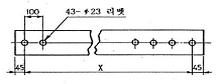
- 2200
- 2300
- 4100
- 4200
(정답률: 80%)
36. 다음 그림은 리벳이음 보일러의 간략도와 부분 상세도이다. ㉠판의 두께는?
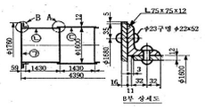
- 11mm
- 12mm
- 16mm
- 32mm
(정답률: 68%)
37. 보기와 같이 지시된 표면의 결 기호의 해독으로 올바른 것은?
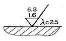
- 제거 가공 여부를 문제 삼지 않을 경우이다.
- 최대높이 거칠기 하한값이 6.3㎛ 이다.
- 기준길이는 1.6㎛ 이다.
- 2.5는 컷오프 값이다.
(정답률: 79%)
38. 재료기호 SS 400에 대한 설명 중 맞는 항을 모두 고른 것은? (단, KS D 3503 적용한다.)
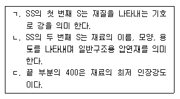
- ㄱ
- ㄱ,ㄴ
- ㄱ,ㄷ
- ㄱ,ㄴ,ㄷ
(정답률: 80%)
39. 도면의 KS 용접기호를 가장 올바르게 설명한 것은?
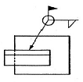
- 전체둘레 현장 연속 필릿 용접
- 현장 연속 필릿 용접(화살표 있는 한변 만 용접)
- 전체둘레 현장 단속 필릿 용접
- 현장 단속 필릿 용접(화살표 있는 한변 만 용접)
(정답률: 55%)
40. 나사의 제도방법을 설명한 것으로 틀린 것은?
- 수나사에서 골 지름은 가는 실선으로 도시한다.
- 불완전 나사부를 나타내는 골지름 선은 축선에 대해서 평행하게 표시한다.
- 암나사의 측면도에서 호칭경에 해당하는 선은 가는 실선이다.
- 완전나사부란 산봉우리와 골 및 모양의 양쪽 모두 완전한 산형으로 이루어지는 나사부이다.
(정답률: 55%)
3과목: 기계설계 및 기계재료
41. α−Fe가 723℃에서 탄소를 고용하는 최대한도는 몇 %인가?
- 0.025
- 0.1
- 0.85
- 4.3
(정답률: 48%)
42. 켈멧(kelmet) 합금이 주로 쓰이는 곳은?
- 피스톤
- 베어링
- 크랭크 축
- 전기저항용품
(정답률: 65%)
43. 스테인리스강의 기호로 옳은 것은?
- STC3
- STD11
- SM20C
- STS304
(정답률: 78%)
44. 항온 열처리의 종류가 아닌 것은?
- 마퀜칭
- 마템퍼링
- 오스템퍼링
- 오스드로잉
(정답률: 75%)
45. 구리의 성질을 설명한 것으로 틀린 것은?
- 전기 및 열전도도가 우수하다.
- 합금으로 제조하기 곤란하다.
- 구리는 비자성체로 전기전도율이 크다.
- 구리는 공기 중에서는 표면이 산화되어 암적색으로 된다.
(정답률: 74%)
46. 공석강을 오스템퍼링 하였을 때 나타나는 조직은?
- 베이나이트
- 솔바이트
- 오스테나이트
- 시멘타이트
(정답률: 41%)
47. 주철의 결점을 없애기 위하여 흑연의 형상을 미세화, 균일화하여 연성과 인성의 강도를 크게 하고, 강인한 펄라이트 주철을 제조한 고급주철은?
- 가단 주철
- 칠드 주철
- 미하나이트 주철
- 구상 흑연 주철
(정답률: 43%)
48. 복합재료에 널리 사용되는 강화재가 아닌 것은?
- 유리섬유
- 붕소섬유
- 구리섬유
- 탄소섬유
(정답률: 48%)
49. 담금질한 강의 잔류오스테나이트를 제거하고 마르텐자이트를 얻기 위하여 0이하에서 처리하는 열처리는?
- 심냉처리
- 염욕처리
- 오스템퍼링
- 항온변태처리
(정답률: 83%)
50. 고주파 경화법 시 나타나는 결함이 아닌 것은?
- 균열
- 변형
- 경화층 이탈
- 결정 입자의 조대화
(정답률: 67%)
51. 커플링의 설명으로 옳은 것은?
- 플렌지커플링은 축심이 어긋나서 진동하기 쉬운데 사용한다.
- 플렉시블커플링은 양축의 중심선이 일치하는 경우에만 사용한다.
- 올덤커플링은 두축이 평행으로 있으면서 축심이 어긋났을 때 사용한다.
- 원통커플링의 지름은 축 중심선이 임의의 각도로 교차 되었을 때 사용한다.
(정답률: 61%)
52. 다음 중 축 중심선에 직각 방향과 축방향의 힘을 동시에 받는데 쓰이는 베어링으로 가장 적합한 것은?
- 앵귤러 볼 베어링
- 원통 롤러 베어링
- 스러스트 볼 베어링
- 레이디얼 볼 베어링
(정답률: 42%)
53. 코일 스프링에서 유효 감김수를 2배로 하면 같은 축 하중에 대하여 처짐량은 몇 배가 되는가?
- 0.5
- 2
- 4
- 8
(정답률: 56%)
54. 3000kgf의 수직방향 하중이 작용하는 나사잭을 설계할 때, 나사잭 볼트의 바깥지름은 얼마인가? (단, 허용응력은 6kgf/mm2 골지름은 바깥지금의 0.8배 이다.)
- 12mm
- 32mm
- 74mm
- 126mm
(정답률: 50%)
55. 지름 50mm의 연강축을 사용하여 350rpm으로 40kW를 전달할 수 있는 묻힘 키의 길이는 몇 mm 이상인가? (단, 키의 허용전단응력은 49.⑤MPa, 키의 폭과 높이는 bxh=15mm×10mm이며, 전단저항만 고려한다.)
- 38
- 46
- 60
- 78
(정답률: 41%)
56. 다음 중 브레이크 용량을 표시하는 식으로 옳은 것은? (단, μ는 마찰계수, p는 브레이크 압력, v는 브레이크 륜의 주속이다.)
- Q=μpv
- Q=μpv2
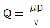
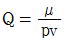
(정답률: 61%)
57. 다음 중 용접 이음의 장점으로 틀린 것은?
- 사용재료의 두께에 제한이 없다.
- 용접이음은 기밀유지가 불가능하다.
- 이음 효율은 100%까지 할 수 있다.
- 리벳, 볼트 등의 기계 결합 요소가 필요 없다.
(정답률: 72%)
58. 표준 스퍼기어에서 모듈4, 잇수 21개, 압력각이 20° 라고 할 때, 법선피치(pn)은 약 몇 mm인가?
- 11.8
- 24.8
- 15.6
- 18.2
(정답률: 27%)
59. 재료를 인장시험 할 때, 재료에 작용하는 하중을 변형전의 원래 단면적으로 나눈 응력은?
- 인장응력
- 압축응력
- 공칭응력
- 전단응력
(정답률: 52%)
60. 평 벨트와 비교하여 V벨트의 특징으로 틀린 것은?
- 전동효율이 좋다.
- 고속운전이 가능하다.
- 정숙한 운전이 가능하다.
- 축간거리를 더 멀리 할 수 있다.
(정답률: 66%)
4과목: 컴퓨터응용설계
61. 다음 중 3차원 형상을 표현하는 것으로 틀린 것은?
- 곡선 모델링
- 서피스 모델링
- 솔리드 모델링
- 와이어프레임 모델링
(정답률: 77%)
62. 2차원 평면에서 (1.1)과 (5.9)를 지나는 직선을 매개변수 t의 곡선식
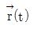
로 표현한 것으로 알맞은 것은? (단,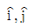
는 각각 x,y축 방향의 단위벡터임)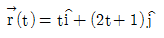
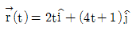
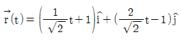
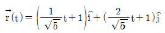
(정답률: 30%)
63. 컴퓨터 그래픽 장치 중 입력장치가 아닌 것은?
- 음극관(CRT)
- 키보드(Keyboard)
- 스캐너(Scanner)
- 디지타이저(Digitizer)
(정답률: 71%)
64. 다음 중 하나의 타원을 구성하기 위한 설명으로 틀린 것은?
- 서로 대각선을 이루는 두 점에 의한 타원
- 타원의 중심, 장축 지정 점, 단축 지정 점을 알고 있는 경우
- 타원의 중심, 장축 지정 점, 장축과 수직한 직선을 알고 있는 경우
- 세 점 중 두 점은 일직선상에 존재하고 남은 한 점은 나머지 두 점에 의한 직선과 수직관계를 성립하는 경우
(정답률: 44%)
65. 일반적인 CAD시스템에서 원을 정의하는 방법으로 틀린 것은?
- 정점과 초점
- 중심과 반지름
- 원주상의 3점
- 중심과 원주상의 한 점
(정답률: 65%)
66. 그림과 같이 평면상의 두 벡터
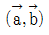
로 이루어진 평행사변형의 넓이를 구한 식으로 옳은 것은?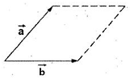
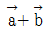
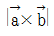
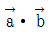
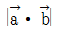
(정답률: 70%)
67. CAD시스템에서 이용되는 2차 곡선방정식에 대한 설명으로 거리가 먼 것은?
- 매개변수식으로 표현하는 것이 가능하기도 하다.
- 곡선식에 대한 계산시간이 3차, 4차식보다 적게 걸린다.
- 연결된 여러 개의 곡선사이에서 곡률의 연속이 보장된다.
- 여러 개 곡선을 하나의 곡선으로 연결하는 것이 가능하다.
(정답률: 51%)
68. 솔리드 모델링에서 CSG와 비교한 B-rep의 특징으로 옳은 것은?
- 표면적 계산이 곤란하다.
- 복잡한 Topology 구조를 가지고 있다.
- Data Base의 Memory를 적게 차지한다.
- Primitive를 이용하여 직접 형상을 구성한다.
(정답률: 54%)
69. 다음 중 형상 구속조건과 치수조건을 입력하여 모델링 하는 기법으로 옳은 것은?
- 파라메트릭 모델링
- Wire frame 모델링
- B-rep(Boundary Representation)
- CSG(Constructive Solid Geometry)
(정답률: 68%)
70. 기하학적 형상모델링에서 Bezier 곡선의 성질에 대한 설명으로 틀린 것은?
- 곡선은 양단의 끝점을 반드시 통과한다.
- 1개의 정점 변화가 곡선전체에 영향을 준다.
- n개의 정점에 의해 생성된 곡선은 (n+1)차 곡선이다.
- 곡선은 정점을 통과시킬 수 있는 다각형의 내측에만 존재한다.
(정답률: 75%)
71. 형상을 구성하기 위해서 추출한 형상제어점들을 전부 통과하는 도형요소로 옳은 것은?
- 쿤스(coons)곡면
- 베지어(bezier)곡면
- 스플라인(spline)곡선
- B-스플라인(B-spline)
(정답률: 63%)
72. “y=3x2”으로 표시된 곡선에 대하여 점(1,3)에서 접선의 기울기는?
- 1
- 3
- 6
- 9
(정답률: 47%)
73. IGES(Initial Graphics Exchange Specification)를 설명한 것으로 옳은 것은?
- 그래픽 정보 교환용 기계장치
- 초기 생성된 그래픽을 수정하기 위한 기능
- 장기에서 그래픽 정보를 생성하기 위한 초기화 상태에 관한 규칙
- 서로 다른 시스템간의 그래픽 정보를 상호교류하기 위한 파일 구조
(정답률: 75%)
74. 다음 중 일반적으로 3차원 CAD가 필요하지 않은 분야는?
- 금형 설계
- 건축 설계
- 신발 설계
- 전기회로 설계
(정답률: 75%)
75. 다음 중 중앙처리장치(CPU)와 메인 메모리(RAM)사이에서 처리될 자료를 효율적으로 이송 할 수 있도록 하는 기능을 수행하는 것은?
- BIOS
- 캐시 메모리
- CISC
- 코프로세서
(정답률: 76%)
76. 다음 모델링 기법 중에서 숨은 선 제거가 불가능한 모델링 기법은?
- CSG모델링
- B-rep모델링
- Surface모델링
- Wire Frame모델링
(정답률: 74%)
77. 모델링 기법 중에서 실루엣(silhouette)을 구할 수 없는 것은?
- CSG방식
- Surface model방식
- B-rep방식
- Wire frame model방식
(정답률: 68%)
78. 그래픽 디스플레이 장치 중에서 랜덤주사형(random scan type)을 설명한 것 중 틀린 것은?
- 가격이 고가이다.
- 고밀도를 표시할 수 있어 화질이 좋다.
- 동형의 동적 표현이 가능하여 애니메이션에 사용할 수 있다.
- 컬러화에 제한 없이 자유로운 색상의 애니메이션이 가능하다.
(정답률: 58%)
79. 플로터(plotter)의 일반적인 분류 방식으로 가장 거리가 먼 것은?
- 펜(pen)식
- 충격(impact)식
- 래스터(raster)식
- 포토(photo)식
(정답률: 65%)
80. 일반적으로 CAM은 생산계획과 통제에 컴퓨터 기술을 효과적으로 사용하는 것을 말한다. 다음 중 CAM의 응용영역과 가장 거리가 먼 것은?
- 컴퓨터 이용 공정계획
- 컴퓨터 이용 제품 공차 분석
- 컴퓨터 이용 NC 프로그래밍
- 컴퓨터 이용 자재소요계획
(정답률: 50%)
드릴 지름 = 절단속도 ÷ (회전수 × π)
드릴 지름 = 15 ÷ (160 × 3.14)
드릴 지름은 약 0.0298m 이므로, mm로 변환하면 약 29.8mm가 된다. 따라서 정답은 "29.8"이다.